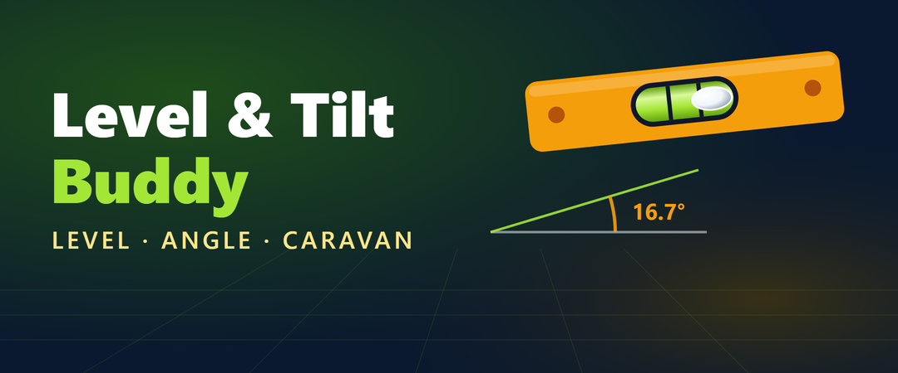
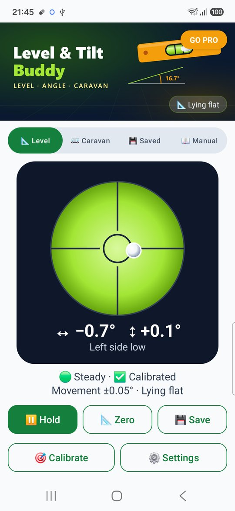
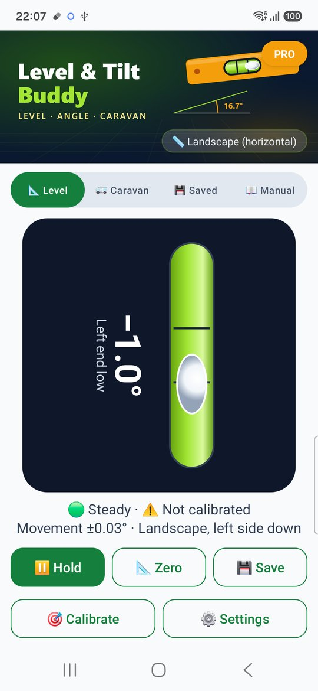
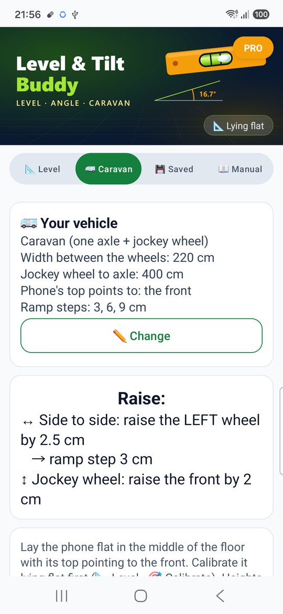
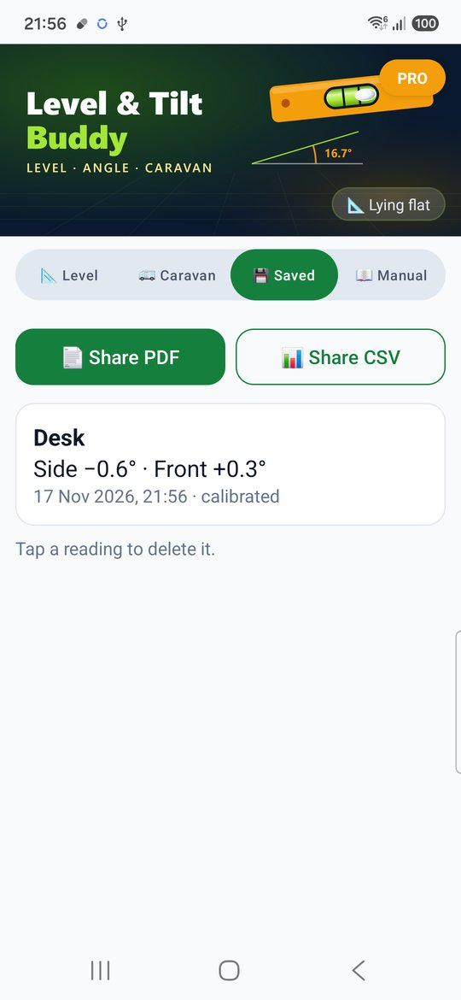
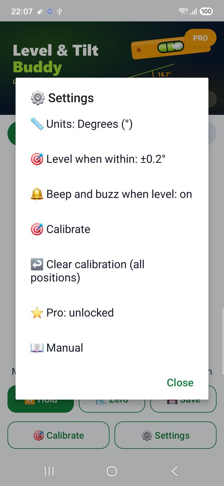

Everything below is the same text as the Manual in the app (📖 Manual tab).
Level & Tilt Buddy turns your phone into a spirit level and angle meter, with no ads. It reads the phone's motion sensor (accelerometer), averages it over 0.7 seconds so the numbers stand still, and shows the angle to 0.1°.
It never asks for permissions and works without internet.
The app picks the way by itself from how you hold the phone.
Like a real spirit level, the bubble goes to the HIGH side. Under the numbers it says which side or end is low, for example "Right side low". Standing up, leaning the phone forwards or backwards doesn't change the reading.
The bubble, the ring and the numbers turn green when the phone is within your level limit (±0.2° unless you change it in ⚙️ Settings: ±0.1°, ±0.2°, ±0.5° or ±1°).
🔔 Beep and buzz when level (⚙️ Settings, off until you switch it on): one short beep and a buzz when it becomes level, so you can adjust something without looking at the screen.
The screen stays on while the app is open.
Under the level: 🟢 Steady means the phone is still and the reading can be trusted. 🟡 Hold still means it is moving or being touched.
Movement ±… shows how much the single readings spread around the average in the last 0.7 seconds (in degrees). It is measured, not a guess.
Every phone's sensor is slightly off, and a phone case can tilt it. Calibrating measures this and takes it away from every reading.
1. Put the phone where you'll measure: lying flat, or standing up the way you'll use it (landscape or portrait). The surface does NOT have to be level. Keep it still and tap Step 1.
2. Spin the phone round on the same spot (half a turn): lying flat, like a turntable, so its top points the other way; standing up, keep the same side on the surface and spin it like a revolving door, so the screen faces the other way. Tap Step 2. On phones with a gyroscope the app checks it really was turned round, and asks again if it wasn't.
The surface's slope shows the opposite way in the two steps and cancels out; what is left is the phone's own error. The app tells you how far off the phone was and how much the surface sloped.
Lying flat, landscape (either side down) and portrait (either way up) are each calibrated on their own. Calibrate again after putting a different case on. ⚙️ Settings › Clear calibration removes it.
⏸ Hold freezes the reading on the screen, so you can take the phone away from a hard-to-see place and read it. Tap ▶ Go on to measure again.
Measures the angle between two surfaces instead of from level. Put the phone on the first surface, wait for 🟢 Steady and tap 📐 Zero, then put it on the second surface: the numbers show the difference. ✖ Zero off measures from level again. The caravan levelling always measures from level.
⚙️ Settings › Units. Free: degrees (°) and slope (%). ⭐ Pro also has millimetres per metre, inches per foot, ratio (1 in …) and roof pitch (… in 12).
+ means the right side, right end or top end is lower; − means it is higher.
Tells you how many centimetres to raise which wheel.
1. ✏️ Enter your measurements once: caravan or motorhome, the width between the wheels (middle of one wheel to the middle of the other), and the jockey wheel to the axle (motorhome: front axle to back axle), in cm. Optional: your levelling ramp steps, for example 3, 6, 9.
2. Calibrate lying flat (📐 Level › 🎯 Calibrate).
3. Lay the phone flat in the middle of the floor with its top pointing to the front (or change where it points in ✏️ Change).
It shows, for example, "raise the LEFT wheel by 3.5 cm → ramp step 3 cm" and "raise the front by 2 cm" (jockey wheel), rounded to the nearest 0.5 cm. Within 0.5 cm counts as level. Left and right are as seen standing behind the vehicle looking forwards.
The heights are worked out from the measured angle and your measurements, so measure carefully.
💾 Save on the Level tab saves what is on the screen with a name, the date and time, and whether the phone was calibrated. The 💾 Saved tab lists them; tap one to delete it. 📄 Share PDF and 📊 Share CSV (for Excel or Google Sheets) send them all.
Free: the full level lying flat and standing up (landscape and portrait), degrees and %, calibration, Hold, Steady, beep and buzz. No ads.
Pro (one payment, no subscription): 📐 Zero, caravan and motorhome levelling, more units, and saved readings with PDF and CSV.
Tap GO PRO at the top. Restore purchase gets Pro back on a new phone with the same Google account.
No account, no sign-in, and it never asks for permissions. Your settings, calibration and saved readings are kept only in the app's own storage on this phone. Level & Tilt Buddy has no servers. A PDF or CSV only leaves the phone when you share it yourself.
Google Play handles the Pro purchase.
Level & Tilt Buddy v1.3 (Build 4)
Publisher: AppStack Studio
| Question | Many level apps | Level & Tilt Buddy |
|---|---|---|
| Ads? | Many are paid for by ads, some with no way to pay to remove them | No ads, ever |
| Price | Mostly free with ads | Free full level with no ads; Pro is one payment for life (no subscription) |

1. Lying flat
Round bubble, side and front angles, and which side is low.

2. Standing up
Tube bubble in landscape (horizontal) or portrait (vertical), turned the right way up for you.

3. Caravan (Pro)
Which wheel to raise, how many cm, and which ramp step.

4. Saved readings (Pro)
Name, date and time, shared as a PDF or CSV.

5. Settings
Units, level limit, beep and buzz, and calibration.
Screenshots: Level & Tilt Buddy 1.0 on a Samsung Galaxy S24.